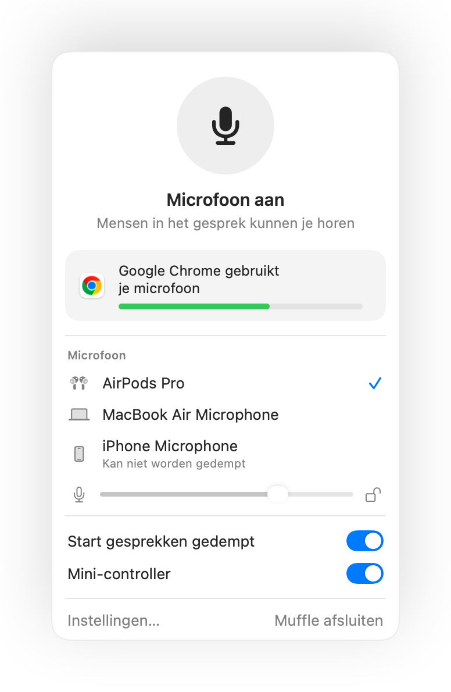

Hoe je voorkomt dat apps je microfoonvolume op een Mac wijzigen
Veel bel-apps passen je invoerniveau automatisch aan met automatische volumeregeling. Je stelt een goed niveau in via Systeeminstellingen, start een gesprek in Google Meet, en enkele minuten later is de schuifknop verplaatst en klink je zacht of vervormd.
Muffle kan je microfoonniveau vergrendelen. Zodra een app dit aanpast, zet Muffle het direct weer terug.
Probeer Muffle 3 dagen gratisBinnenkort in de Mac App Store
Vergrendel je microfoonniveau
- Installeer Muffle.
- Klik op het Muffle-pictogram in de menubalk en stel je niveau in met de microfoonschuifknop.
- Klik op het slotje naast de schuifknop.
- Neem deel aan je gesprekken. Je niveau blijft precies zoals je het hebt ingesteld.

- Muffle waarschuwt je in het paneel wanneer je niveau tijdens een gesprek te laag is.
- De vergrendeling onthoudt het niveau per microfoon, zodat je AirPods en de ingebouwde microfoon van je Mac elk hun eigen stand behouden.
Veelgestelde vragen
Waarom verandert het microfoonvolume van mijn Mac steeds?
Apps zoals Chrome, Zoom en Teams gebruiken automatische volumeregeling en passen het systeeminvoerniveau aan terwijl je praat.
Kan ik het niveau nog steeds zelf aanpassen?
Ja. Gebruik de schuifknop in het Muffle-paneel; dit werkt het vergrendelde niveau direct bij.